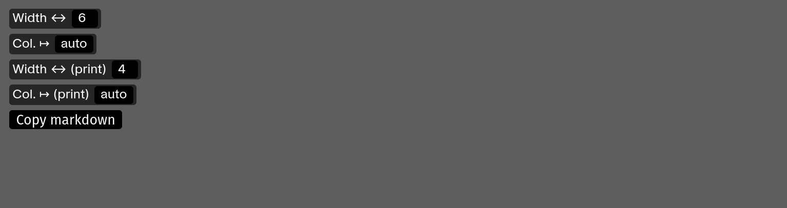

Figures et annexes
Les annexes (template appendices) et les sections iconographiques (template figures) sont organisées sur une grille de 12 colonnes.
Dimensions et mise en page des figures et des images
On peut ajouter au code d’insertion d’une image des attributs width, prinwidth, col et printcol qui permettront de déterminer la largeur et la position (colonne) d’affichage de l’image.
Par défaut, chaque image ou figure occupe 3 colonnes.
(image: images/fichier.jpg width:8 printwidth:4)
↑ Cette image occupera 8 colonnes en version écran et 4 colonnes en version print.
(image: images/fichier.jpg width:8 col:5)
↑ Cette image occupera 3 colonnes (par défaut) en version print, 8 colonnes en version écran et sera décalée (à l’écran) en 5e colonne.
Mise en page visuelle des images
Pour aider à la mise en page “visuelle” des images, on peut activer un utilitaire qui aide à déterminer le code d’intégration des images.
En contexte écran, ajouter /?layout à l’URL.
En contexte de prévisualisation print : /?print&layout.
On peut alors cliquer sur chaque figure pour faire apparaitre un outil d’édition :

Cet outil permet de définir la largeur de la figure (de 3 à 12) et son décalage (auto, ou de 1 à 9).
⚠️ Le code d’intégration de la figure est alors automatiquement copié dans le presse-papier, et doit être collé dans le document markdown source.
⚠️ Attention, en contexte d’impression, la mise en page n’est pas recalculée. Il faut copier/coller le nouveau code d’intégration dans le fichier markdown, enregistrer ce dernier, puis actualiser la page dans le navigateur.
Breaking changes
Avant la version « Figures » de PageTypeToPrint (18 janvier 2024), les options de largeur et de décalage étaient déterminées grâce à des class prédéfinies :
Voir l’ancienne documentation
offset0 : pas de décalage (valeur par défaut)
offset2 décale l’image en colonne 3
offset4 décale l’image en colonne 5
offset6 décale l’image en colonne 7
offset8 décale l’image en colonne 9
quarter dimensionne l’image sur 3 colonnes (un quart de la largeur — valeur par défaut)
third dimensionne l’image sur 4 colonnes (un tiers de la largeur)
half dimensionne l’image sur 6 colonnes (la moitié de la largeur)
twothird dimensionne l’image sur 8 colonnes (deux tiers de la largeur)
threequarter dimensionne l’image sur 9 colonnes (trois quarts de la largeur)
full dimensionne l’image sur 12 colonnes (toute la largeur)
Par exemple :
(figure: url/de_limage.jpg class: notwhite offset6 half)